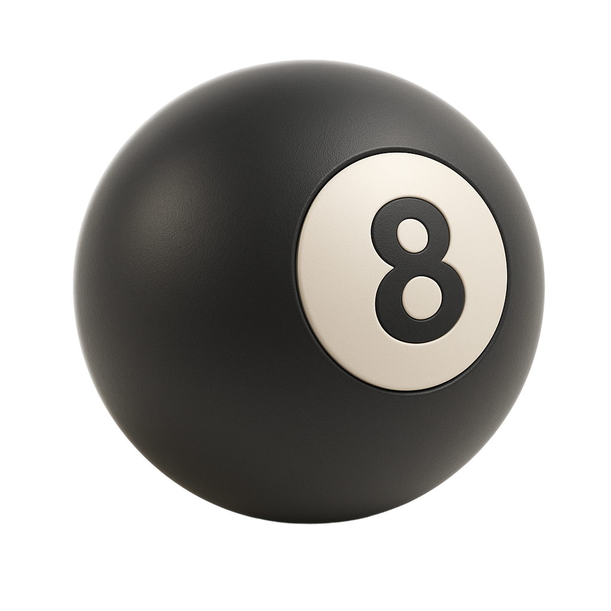
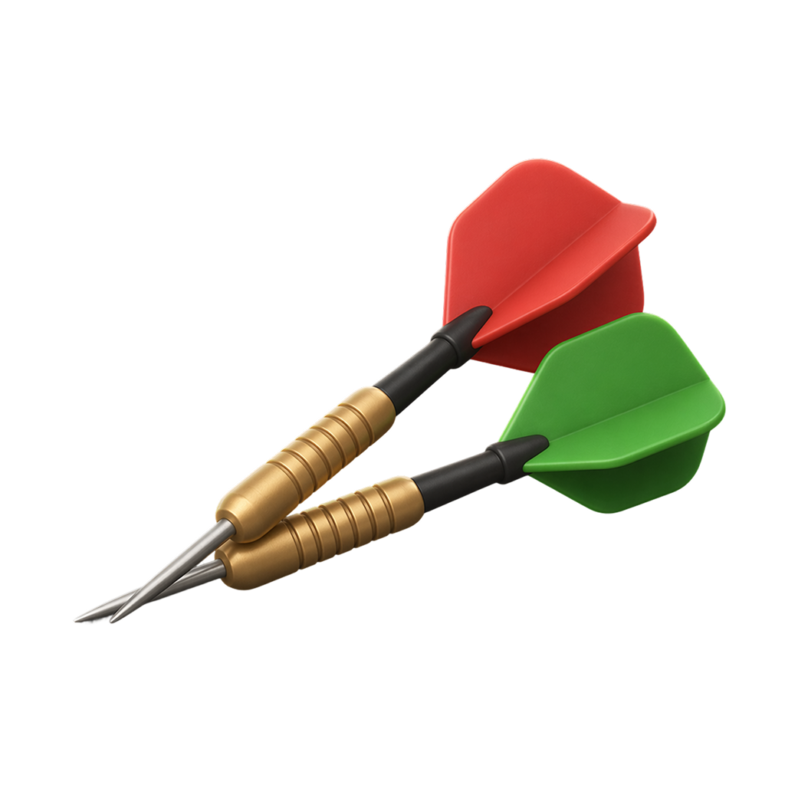
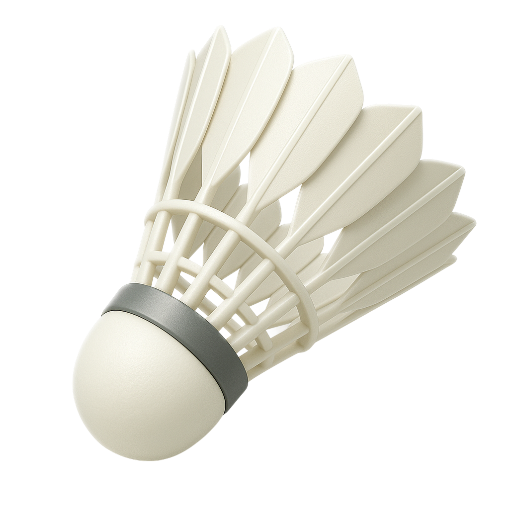
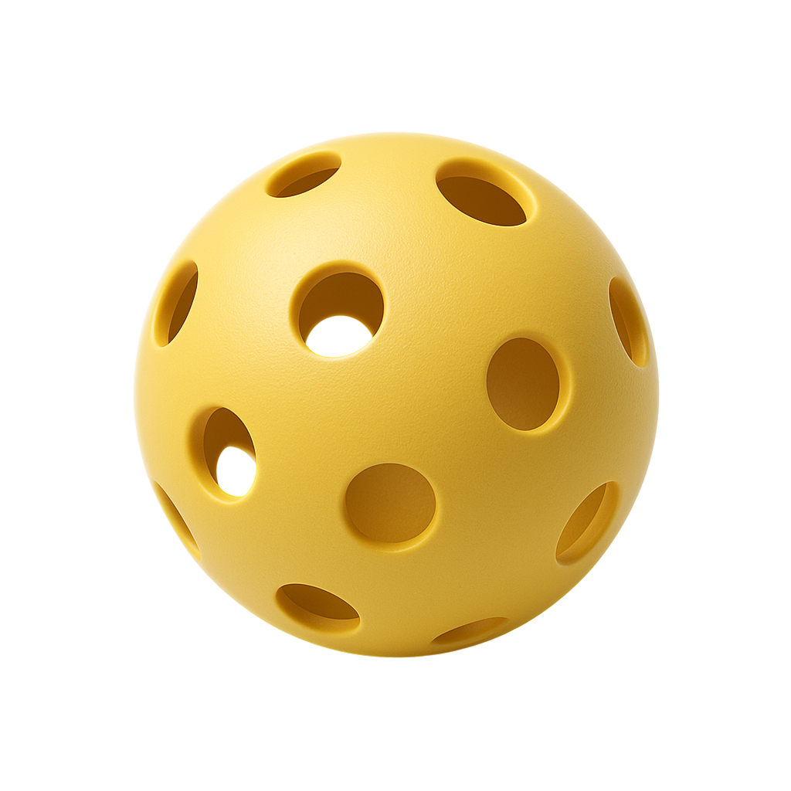

JI FEN / 3D ICON STUDY · 2026.10.03
全能计分器 · 3D 图标候选
31 类，已记录你的选择；所有备选均保留。点击 A 或 B 选择；下方 32 / 48 px 预览用于检查缩小后的识别度。




原 Figma 库材质、光线与造型参考
31 类，已记录你的选择；所有备选均保留。点击 A 或 B 选择；下方 32 / 48 px 预览用于检查缩小后的识别度。




原 Figma 库